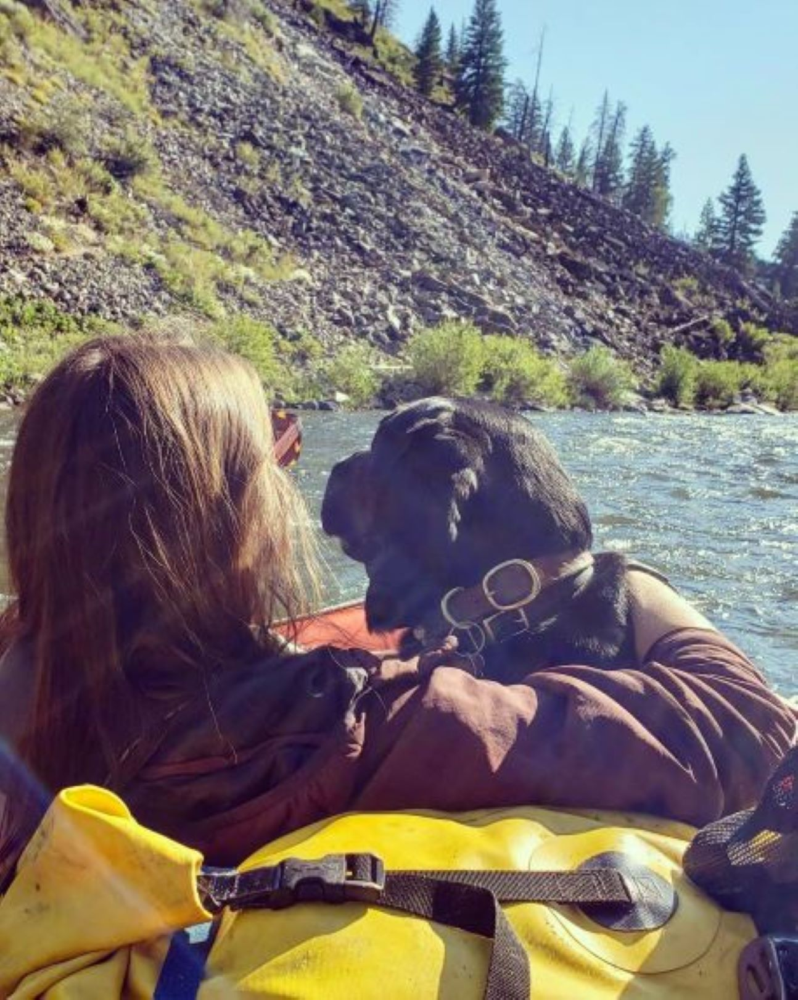

Code Refractor
HoriseonAbout Me

My name is Kelsey M. O'Kelley. I am currently enrolled in a
Full-Stack Web Development Program held by The University of Utah.
I am almost 34 years old and live year round in beautiful Stanley, ID -
population 67 people and Gateway to the wild and scenic Frank Church
Wilderness Area.
Below you will get an introduction to some of
my work as a Full-Stack Website Development Student, as well as ways
to reach me. (Some of my work has been presented as personal hobbies
as a place holder until I complete more projects.)
Work

Lover of Film
Feed me
Flick Picker
Movie Search
Frank Church Wilderness
White Water Rafting
Cooking
New Things